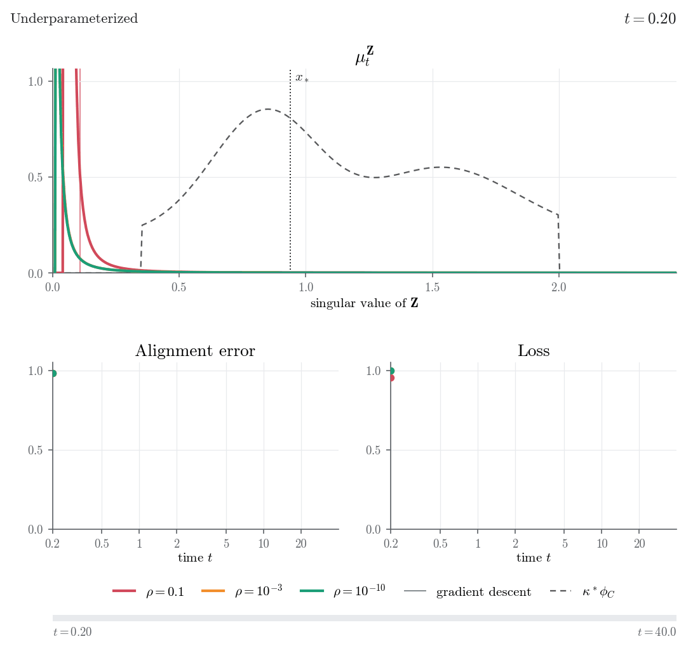

Silent Alignment in Two-Layer Linear Networks: A High-Dimensional Perspective
arXiv Preprint, 2026
Summary and animation
We study gradient flow in two-layer linear networks with small initialization, in the high-dimensional regime where all dimensions diverge proportionally. Training happens in two phases: the network first aligns its singular directions with those of the data, while the loss stays at its initial value. Its singular values are learned only later, from the largest to the smallest.
